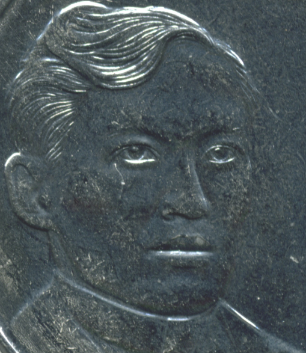

Welcome to my Blog!
Welcome to a trusted resource dedicated to the story and legacy of Dr. José Rizal. Backed by thorough research in Philippine history, this site offers valuable insights to keep readers informed and inspired. It invites you to embark on a meaningful exploration not only of Rizal’s life but also of broader historical and cultural contexts. This blog is both educational and personal. All posts are written by me and focus on key events in Rizal's life, capturing what I’ve learned from class discussions. You’ll also find a gallery section that complements the articles. I hope you enjoy exploring and gaining a deeper understanding of Dr. José Rizal’s remarkable journey. Happy scrolling!
